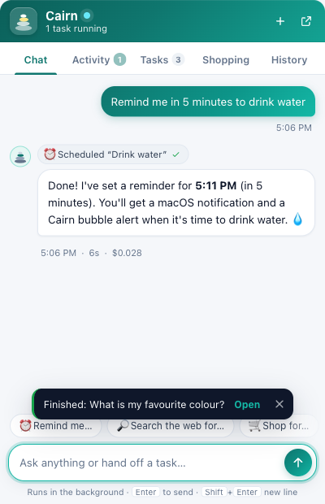
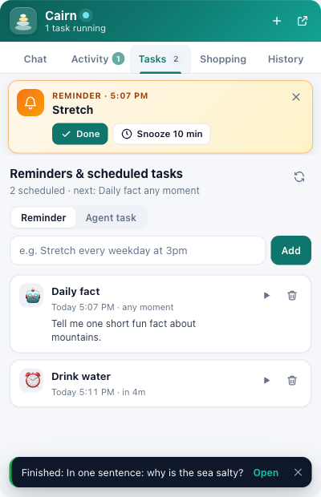
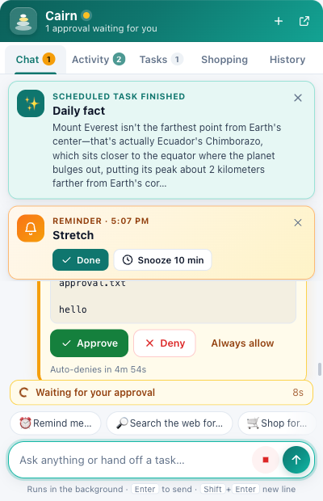
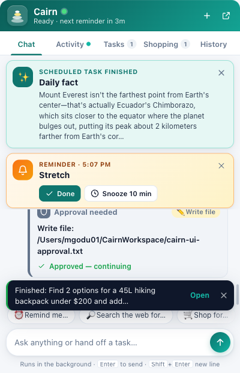
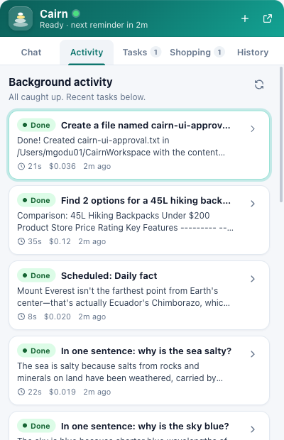
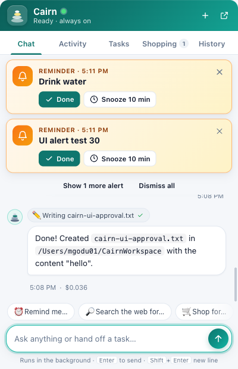
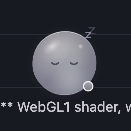

Testing & results
How Cairn proves it is a well-behaved bot: fast unit tests for every parser and policy, integration tests over real sockets, an end-to-end crawl of a purpose-built fixture site, and an opt-in live run against the real Claude CLI. The desktop assistant adds tests for the scheduler, approvals, background runs, MCP tools and routes, plus live scenarios run against the real model.
Test strategy
All tests use the built-in node:test runner and node:assert/strict — no npm packages, no network beyond 127.0.0.1. Each layer answers a different question:
Unit Is each policy exactly right?
robots.txt parsing and longest-match rules, rate-limit timing with injected clocks, Ed25519 signature bases, HTML/sitemap extraction, tokenizer and BM25 ranking. Pure functions and small classes with fakes; milliseconds per test.
Integration Do the parts cooperate over real HTTP?
Fetcher against throwaway local servers (redirect chains, 429 + Retry-After, truncation, timeouts), crawler against a small site, MCP server over stdio, HTTP API guards and routes on port 0, agent runner against a fake Claude CLI.
End-to-end Does the whole system behave on a hostile-ish site?
A full runtime crawls the Northwind Trails fixture and the test inspects what the fixture actually received: which paths, which User-Agent, which signatures. Then search, sign-verified user fetch and a cited answer via the fake Claude.
Live Claude Does it work with the real model?
Opt-in (CAIRN_LIVE_CLAUDE=1): one real quick answer and one real deep-research run over the fixture. Costs a few cents; skipped by default so CI stays free and offline.
The guiding rule: compliance is asserted from the server's point of view. It is not enough that the crawler says it skipped /private/; the fixture's request log must show it never asked.
Test pyramid
flowchart TB L["Live Claude
live-claude.test.js
opt-in, real model, cents"] E["End-to-end
e2e.test.js
runtime + fixture site + server + fake Claude"] I["Integration
fetcher, crawler, server, agent, mcp
real sockets on 127.0.0.1, fake Claude CLI"] U["Unit
robots, ratelimit, signing, extract, index
pure logic, injected clocks, no I/O"] L --- E E --- I I --- U style L fill:#fee2e2,stroke:#b91c1c,color:#1d2330 style E fill:#fef3c7,stroke:#b45309,color:#1d2330 style I fill:#e6f2ee,stroke:#2f6f5e,color:#1d2330 style U fill:#dcfce7,stroke:#15803d,color:#1d2330
Most assertions live at the bottom where they are fast and precise; each higher layer adds fewer, broader tests that prove the wiring.
Test matrix
There are 19 test files with 399 test cases in the default run (counts as of 2026-09-30; per-file numbers are in Latest results). npm test passes 397 and skips 2 live-only cases. The live engine file adds 2 more cases when CAIRN_LIVE_CLAUDE=1 is set. Each module owner wrote the tests for their module, and the fixture owner wrote the end-to-end and live tests.
| File | Layer | Cases | Module under test | What it covers |
|---|---|---|---|---|
test/robots.test.js | Unit | 51 | src/robots/parser.js, src/robots/cache.js | RFC 9309 parsing (BOM, CRLF and lone CR, comments, unknown directives, grouped user-agents, rules before any UA ignored, 500 KiB cap, empty input); group selection (most specific token first, family-token fallback CairnSearch → Cairn → *, merging duplicate groups, CairnSearch/1.0 UA lines, hyphenated Cairn-User); longest match, allow-wins ties, * and $, path + query, percent-encoding equivalence, /robots.txt always allowed, pathological wildcards; the RFC 9309 and Google documented examples; explainDecision; cache status mapping (2xx parse, 4xx allow-all, 429/5xx/network → stale copy or disallow-all cached ≤ 10 min), TTL, per-origin keys, shared in-flight fetches, check() per role, entries/invalidate/clear. |
test/ratelimit.test.js | Unit | 15 | src/net/ratelimit.js | Per-host FIFO with minimum delay, crawl-delay overriding minDelayMs, hosts in parallel while one host is serialised, global cap, no global slot held while waiting on a host delay, per-host concurrency > 1, exponential backoff with cap and Retry-After winning, reward reset, stats, aborting a queued task, options read at use time, parseRetryAfter for seconds and HTTP-dates. |
test/signing.test.js | Unit | 11 | src/net/signing.js | RFC 8037 thumbprint vector, headers that verify, exact RFC 9421 §2.5 signature base, coverage of @authority and signature-agent, expired / future / unknown-keyid / wrong-tag / missing-header / tampered failures, signing disabled, config read at use time, key pair persisted with a 0600 private key, JWKS kid = thumbprint, keys without kid. |
test/fetcher.test.js | Integration | 32 | src/net/fetcher.js | Honest identity and Web Bot Auth headers; robots disallow without contacting the page; per-role groups; redirect into a disallowed path blocked with the target never requested; same-origin and cross-origin redirects (second origin's robots.txt fetched); redirect loops; non-http redirect; 429 + Retry-After and 503 retries; network errors; unreachable robots.txt = disallow-all; maxBytes truncation of an endless body; timeout; scheme, invalid-URL and private-network blocks; X-Robots-Tag incl. bot-scoped directives; user role respecting robots by default and the override; charset; fetchRaw; robots audit kind; injected fetchImpl; caller abort. |
test/extract.test.js | Unit | 28 | src/extract/html.js, src/extract/sitemap.js | Title/description/lang/canonical (with og:title and h1 fallbacks); skipped script/style/noscript/template/svg/iframe content; comments, CDATA, doctype; malformed HTML (uppercase tags, unquoted attributes, unclosed tags, stray <); entity decoding incl. numeric and cp1252; whitespace; markdown for headings, lists, links, code, bold, pre, blockquote; links with <base href>, normalisation, dropped schemes, rel=nofollow, dedupe; meta robots (none, bot-specific tokens); large pages; extractText; sitemaps: urlset, sitemapindex, namespaced, plain text, RSS/Atom, garbage. |
test/index.test.js | Unit | 17 | src/index/tokenize.js, src/index/store.js | Tokenizer (stopwords, Unicode, accents, numbers, light stemming); BM25 with title boost; stemming across forms; multi-term preference, limit/offset; site filter (option and inline site:); ~30-word snippets; added/updated/unchanged by content hash; URL normalisation; remove/clear; nosnippet excluded from snippets and passages; ~120-word passages with 20-word overlap; findByHash/list/stats; atomic save/load, debounced and serialised saves; 2000-doc performance (search < 50 ms). |
test/crawler.test.js | Integration | 25 | src/crawl/crawler.js, jobs.js, corpus.js | Depth and page limits; same-site scope (www. is the same site); include/exclude patterns; page-level and rel=nofollow; meta/X-Robots-Tag noindex (links still followed); bot-specific meta tag; canonical and content-hash duplicates; sitemap-index recursion finding an orphan; useSitemaps=false; robots-blocked URLs never requested; non-HTML skipped, text/plain indexed, HTTP errors counted; corpus role writing JSONL and never touching the index; role validation; cancel; event payloads and exact status() shape; recent capped at 50; JobManager create/list/get/cancel/waitFor and 50-job cap; corpus writer; real SearchIndex. |
test/agent.test.js | Integration | 16 | src/agent/claude.js, answer.js, research.js | Documented CLI flag set; claudeAvailable; stream-json parsing with the prompt on stdin; kill on timeout and abort; missing binary; CLI errors and garbage output; citation-number parsing (lists, ranges, repeats); quick answer mapping [n] to sources; extractive fallback when the CLI is missing or fails; empty-index message without calling Claude; deep research MCP config and cited-source mapping; allowLiveFetch:false; deep degrading to quick. |
test/mcp.test.js | Integration | 15 | src/agent/mcp-server.js | JSON-RPC over stdio against a fake API: initialize, five tools with JSON-schema inputs, search_index and stable source ids, fetch_page markdown cap and id reuse, robots refusal as a clear (non-error) result, HTTP failure and invalid URL as tool errors, crawl_site polling, check_robots/index_stats, -32601/-32602/-32700, API unreachable, CAIRN_ALLOW_LIVE_FETCH=0. |
test/server.test.js | Integration | 30 | src/server/*.js, bin/cairn.js | Loopback bind and publicBaseUrl rewrite; health; identity with full UAs; /bot naming every token; key-directory media type; IP JSON; search validation; robots check with pasted and live robots.txt; /api/fetch extraction and robots; crawl job to completion feeding search; quick ask falling back to extractive; index doc delete; CSRF guards (415, 403); Host guard (421); 413; 404/405; audit list and SSE; config round-trip; sign-preview verified by verify-signature; safe static serving; CLI help, doctor, robots --file and search --json. |
test/fetch-index.test.js | Integration | 8 | src/server/api.js (fetch → index path) | A user fetch never indexes a page that CairnSearch is disallowed from. With respectForUserFetch off, a disallowed page is fetched but still not indexed. Also covers CairnSearch-scoped noindex in a header or meta tag, removing a page that becomes noindex, canonical and duplicate rules, the blocked redirect hop being reported, noarchive and nosnippet display, and the cap on concurrent answers (429). |
test/sse.test.js | Unit | 2 | src/server/sse.js | A client that stops reading is dropped instead of buffered without limit. Streams beyond the client cap get 503. |
test/scheduler.test.js | Unit | 59 | src/assistant/when.js, src/assistant/scheduler.js | Natural-language parseWhen ("in 10 minutes", "tomorrow at 9am", "every weekday at 8:30", "on friday"). nextOccurrence keeps wall-clock time across DST changes for daily, weekly, weekday, day-filter and interval schedules. Recurrence normalisation, and one-shot reminders firing exactly once. After a sleep, missed days are skipped with no burst of firings, and an overdue one-shot fires once at start. Also covers cancel and update, persistence with atomic files and a corrupt file set aside, run-history cap, a throwing listener, and an unref()ed timer. |
test/assistant-core.test.js | Integration | 19 | src/assistant/conversations.js, approvals.js, agent.js | Conversation store persistence. The approval queue: request, pending, resolve or deny, long-poll timeout, timeout-denies. Runs against the fake Claude CLI: status, text, result and done events, and the session reused via --resume (with a retry when resume fails). Safety defaults: isolated Claude settings, a ~/CairnWorkspace working directory, and home granted via --add-dir. Also covers CLI errors and a missing binary, the concurrency cap and queueing, serialised runs within a conversation, approvals moving runs to waiting_approval, event replay, persisted and recovered runs, the CLI argument set, and unattended scheduled runs. |
test/assistant-tools.test.js | Integration | 26 | src/assistant/mcp-tools.js, src/assistant/macos.js | The assistant MCP server over stdio: tool schemas, schedule_task and task tools, notify, Apple Reminders and Calendar, open URL or app, web research, shopping and clipboard proxies. approval_prompt allow, edited input, deny with the user's message, attended and unattended timeouts, and an unreachable API. stdout stays pure protocol. AppleScript escaping and the macOS script builders run in dry-run mode, and openUrl allows http(s) only. Two LIVE cases are opt-in. |
test/assistant-routes.test.js | Integration | 17 | src/assistant/routes.js | The /api/assistant/* routes. Health. Content-type, origin and body-size guards. Settings. Chat runs streamed over SSE, plus background runs and cancel. Last-Event-ID replay, conversations, the approval flow, tasks from text, due reminders broadcast and notified, run-now and task_result, shopping CRUD, macOS actions in dry-run, SSE heartbeats, and conversation deletion. |
test/server-assistant.test.js | Integration | 9 | src/server/app.js, api.js, bin/cairn.js | The assistant mounted behind the real server's security checks. A chat run completing. GET /assistant with the HTML CSP. Avatar content types and same-origin framing. The CLI chat/remind/tasks/approvals/shopping commands against a live server, and the "not running" message. Also checks assistant:false, and that close() stops the scheduler so the process exits cleanly. |
test/e2e.test.js | End-to-end | 19 | Whole runtime + fixtures/site-server.js | A real runtime crawls Northwind Trails as CairnSearch and every assertion is made from the fixture's own request log (see compliance assertions); then a corpus crawl, a server on port 0 for Web Bot Auth, user fetches, and a cited quick answer from the fake Claude CLI. |
test/live-claude.test.js | Live | 2 | Real Claude CLI | Only with CAIRN_LIVE_CLAUDE=1: a real quick answer and a real deep-research run (Claude CLI + Cairn MCP server) over the fixture for "How much does the Ridgeback 45 weigh and what is the return window?". Each must use Claude, mention 1.2 and 60, and cite at least one fixture URL. |
test/fixtures/fake-claude.js | Helper | — | — | Executable stand-in for the Claude CLI: answers --version, reads the prompt from stdin and emits stream-json NDJSON (system/init, assistant, result) citing [1], so agent paths are testable offline and for free. |
Fixture site map
fixtures/site-server.js serves Northwind Trails, a fictional outdoor-gear company (HQ at 1420 West Grove Street, Boise, Idaho; founded 2011). Run it with node bin/cairn.js fixture (port 8788) or embed it with startFixtureSite({port: 0}). Its content carries checkable facts — the Ridgeback 45 pack weighs 1.2 kg, holds 45 L and costs $189; the Summit Shell jacket costs $249 and is rated 20k mm; returns within 60 days; lifetime warranty on packs — and each route exists to exercise one behaviour. The server records every request (requests: [{ts, method, path, headers}]) so tests can prove what was not fetched; reset() clears the log (and can re-arm the one-shot 429/503 routes).
User-agent: *
Disallow: /private/
Disallow: /admin/
User-agent: CairnSearch
Allow: /private/public-note.html
Disallow: /private/
Disallow: /*.pdf$
Disallow: /search?
User-agent: CairnCorpus
Disallow: /
Sitemap: <base>/sitemap.xml
flowchart LR
ROOT["/ (home)"]
subgraph CONTENT["Content (indexed)"]
ABOUT["/about.html"]
PRODS["/products/
product index"]
RB45["/products/ridgeback-45.html
1.2 kg, $189, 45 L"]
SHELL["/products/summit-shell.html
$249, 20k mm"]
FAQ["/faq.html
60-day returns, warranty"]
BLOG["/blog/ and post-1..3"]
DEEP["/blog/deep/level-3.html
then level-4.html"]
end
subgraph ROBOTS["robots.txt rules"]
SECRET["/private/secret.html
disallowed for all"]
NOTE["/private/public-note.html
allowed for CairnSearch only"]
ADMIN["/admin/ and /admin/index.html
disallowed for all"]
PDF["/file.pdf
Disallow /*.pdf$"]
SRCH["/search?q=x
Disallow /search?"]
end
subgraph DIRECTIVES["Page directives"]
NOIDX["/noindex.html
meta noindex, links followed"]
VIANOIDX["/via-noindex.html"]
XR["/xrobots.html
X-Robots-Tag noindex"]
NOF["/nofollow.html
meta nofollow"]
HIDDEN["/hidden-behind-nofollow.html
must stay undiscovered"]
RELNOF["/rel-nofollow.html"]
HIDDEN2["/hidden-rel-nofollow.html
must stay undiscovered"]
end
subgraph DEDUP["Duplicates and types"]
CANON["/canonical-dup.html
canonical to about"]
DUP["/dup-content.html
same text as post-1"]
DJSON["/data.json
skipped-type"]
end
subgraph HTTPB["HTTP behaviour"]
R301["/redirect
301 to about"]
R302["/redirect-to-private
302 into /private/"]
RL["/rate-limited
429 + Retry-After 1, then 200"]
FLAKY["/flaky
503 once, then 200"]
SLOW["/slow
3 s delay, timeouts"]
end
subgraph DISC["Discovery and identity (not linked from home)"]
SMI["/sitemap.xml
sitemapindex"]
SMP["/sitemap-pages.xml"]
ORPHAN["/orphan.html
only in sitemap"]
SIGNED["/signed-only
200 only with valid Web Bot Auth"]
ECHO["/echo-headers
shows UA and From"]
end
ROOT --> CONTENT
ROOT --> ROBOTS
ROOT --> DIRECTIVES
ROOT --> DEDUP
ROOT --> HTTPB
PRODS --> RB45
PRODS --> SHELL
BLOG --> DEEP
NOIDX --> VIANOIDX
NOF -.-> HIDDEN
RELNOF -.-> HIDDEN2
R302 -.->|"blocked on hop"| SECRET
SMI --> SMP --> ORPHAN
Dotted edges are links a compliant crawler must not follow (nofollow) or redirects it must refuse (into a disallowed path). The orphan page is reachable only through the sitemap index.
Compliance assertions
The end-to-end suite crawls the fixture once with the search role (maxPages: 60, maxDepth: 6, politeness delays set to zero) and then checks the fixture's own request log, the index and the audit log. Each row is a hard assertion in test/e2e.test.js:
| Behaviour | Route(s) | Assertion |
|---|---|---|
| robots.txt first, fetched once | /robots.txt | First request of the crawl, and requested exactly once (then cached). |
| Honest identity on every request | all | UA contains CairnSearch/1.0 and +…/bot, never Chrome/, Safari/ or Firefox/; From header present; Signature-Input with tag="web-bot-auth" and Signature-Agent present. |
| Disallowed paths never requested | /private/*, /admin/*, /search?…, /file.pdf | Absent from fixture.requests (except the explicitly allowed note). |
| Token-specific Allow beats generic Disallow | /private/public-note.html | Requested and indexed by CairnSearch. |
| Robots re-checked on redirect hops | /redirect-to-private | The redirecting URL is requested, /private/secret.html is not; outcome blocked-robots; the audit log records the block; the secret page is not indexed. |
| Meta robots and X-Robots-Tag noindex | /noindex.html, /xrobots.html | Fetched but not indexed; /via-noindex.html (linked only from the noindex page) is still discovered. |
| Nofollow | /nofollow.html, /rel-nofollow.html | Their hidden targets are never discovered or requested. |
| Sitemap discovery | /sitemap.xml → /sitemap-pages.xml → /orphan.html | The orphan page (in no link) is indexed. |
| Depth limit | /blog/deep/level-3.html → level-4.html | The chain is followed down to maxDepth. |
| Backoff and retry | /rate-limited, /flaky | 429 (Retry-After) and 503 are retried until the page is fetched and indexed. |
| Deduplication | /canonical-dup.html, /dup-content.html | Canonical and identical-content pages are not indexed twice. |
| Grounded search | /products/ridgeback-45.html | Ranks first for "ridgeback weight". |
| Corpus opt-out independent of search | User-agent: CairnCorpus / Disallow: / | On a fresh fixture, a corpus-role crawl requests only /robots.txt and writes nothing. |
| Web Bot Auth | /.well-known/http-message-signatures-directory, /signed-only | With a server on port 0: the key directory is published at the Signature-Agent URL; an unsigned request to /signed-only gets 401; a user fetch (directly and via POST /api/fetch) verifies with verified: true. |
| User fetches respect robots by default | /private/secret.html | A Cairn-User fetch is refused and the page is not requested. |
| Cited answers | index | A quick answer via the fake Claude CLI answers from indexed passages with citations. |
How to run
# Full offline suite (unit + integration + e2e), 4 files in parallel
$ npm test
# = node --test --test-concurrency=4 test/*.test.js
# One area while developing
$ node --test test/robots.test.js
$ node --test --test-name-pattern="longest match" test/robots.test.js
# Opt-in live run against the real Claude CLI (billed, a few cents)
$ npm run test:live
# = CAIRN_LIVE_CLAUDE=1 node --test test/live-claude.test.js
# choose a cheaper model and/or a specific CLI binary:
$ CAIRN_MODEL=haiku npm run test:live
$ CAIRN_CLAUDE_BIN=/opt/homebrew/bin/claude npm run test:live
# Manual end-to-end showcase: fixture → crawl → robots → search → ask
$ node bin/cairn.js demo # uses Claude if available
$ node bin/cairn.js demo --no-claude # deterministic, offline, free
# Explore the fixture by hand
$ node bin/cairn.js fixture --port 8788
$ node bin/cairn.js crawl http://127.0.0.1:8788/ --max-depth 5 --data-dir /tmp/cairn-play
$ node bin/cairn.js audit --limit 40 --data-dir /tmp/cairn-play| Command | Needs | Typical time |
|---|---|---|
npm test | Node 20+ only — no network beyond loopback, no Claude | A few seconds (about 6 s for 399 tests on a development laptop, 4 files in parallel); the slowest cases wait on real timeouts, Retry-After and the fixture's /slow route. |
npm run test:live | Node 20+, a logged-in claude CLI | Typically 1–4 minutes (each case may take up to 240 s; deep research makes several tool calls). Costs cents. |
node bin/cairn.js demo --no-claude | Node 20+ | About 12 s (measured: 25 pages fetched, 19 indexed, 4 blocked by robots); uses a temporary data directory that is deleted afterwards. |
| Manual crawl at default politeness | fixture running | About 35 s for the same 25 pages — 1 s between requests to one host plus backoff on 429/503. |
Fakes, isolation & determinism
- No shared state. Every test that needs storage creates its own
fs.mkdtempSync(os.tmpdir() + '/cairn-')data directory; nothing writes to the project'sdata/. - Ephemeral ports. Servers (fixture, API, throwaway test servers) listen on
127.0.0.1:0, so parallel test files never collide. - Injected time.
HostSchedulerandRobotsCacheacceptnow/sleepfunctions, so backoff and TTL tests do not sleep for real. - Fast politeness in e2e. The runtime is created with
politeness: {minDelayMs: 0, backoffBaseMs: 10, maxBackoffMs: 100}and a 5 s fetch timeout; the tests still verify ordering, retries and Retry-After handling (the fixture'sRetry-After: 1still wins, because Retry-After beats computed backoff). - Fake Claude.
CAIRN_CLAUDE_BIN=test/fixtures/fake-claude.js(oragent.claudeBinin the runtime overrides) replaces the real CLI with a script that speaks the same stream-json protocol; the agent tests also use nonexistent binaries to exercise the fallbacks. - Fresh fixtures where state matters. The one-shot 429/503 routes and the request log are per fixture instance, so the corpus-role check uses its own fixture (or
reset({rearm: true})). - Clean shutdown. Each test closes its runtime, servers and SSE streams in
after()hooks sonode --testexits without dangling handles.
Latest results
Final integration run, 2026-09-30. Environment: macOS 26.6.2 (Apple silicon, arm64), Node 20.20.0, Claude CLI 2.1.286 (Claude Code, Enterprise login), Swift 6.4. No npm dependencies. Servers for these checks used throwaway mkdtemp data directories under /private/tmp and ports that were not already in use.
npm test 397 / 399 pass
399 tests in 23 suites: 397 passed, 0 failed, 0 cancelled and 2 skipped (both live-only). The run took 6.0 s with --test-concurrency=4.
Live assistant 7 / 7 scenarios
Plus a settings-isolation safety check and three UI checks in a real browser, all against the real Claude CLI. Total spend was about $0.53.
Live engine 2 / 2
The quick answer and the deep-research run over the fixture both used Claude, stated 1.2 kg and 60 days, and cited fixture URLs.
Desktop app 37 / 37 self-checks
bash desktop/build.sh compiles with 0 errors and 0 warnings, passes the built-in self-test, and the bundle passes codesign --verify --deep --strict.
Per-file results
Each file was run on its own with node --test test/<file>, so the durations are wall-clock times for single files.
| File | Layer | Tests | Pass | Fail | Skipped | Time |
|---|---|---|---|---|---|---|
test/robots.test.js | Unit | 51 | 51 | 0 | 0 | 0.26 s |
test/ratelimit.test.js | Unit | 15 | 15 | 0 | 0 | 0.55 s |
test/signing.test.js | Unit | 11 | 11 | 0 | 0 | 0.06 s |
test/extract.test.js | Unit | 28 | 28 | 0 | 0 | 0.70 s |
test/index.test.js | Unit | 17 | 17 | 0 | 0 | 0.71 s |
test/scheduler.test.js | Unit | 59 | 59 | 0 | 0 | 3.12 s |
test/sse.test.js | Unit | 2 | 2 | 0 | 0 | 0.06 s |
test/fetcher.test.js | Integration | 32 | 32 | 0 | 0 | 2.88 s |
test/fetch-index.test.js | Integration | 8 | 8 | 0 | 0 | 0.11 s |
test/crawler.test.js | Integration | 25 | 25 | 0 | 0 | 0.28 s |
test/agent.test.js | Integration | 16 | 16 | 0 | 0 | 0.98 s |
test/mcp.test.js | Integration | 15 | 15 | 0 | 0 | 0.24 s |
test/server.test.js | Integration | 30 | 30 | 0 | 0 | 0.65 s |
test/assistant-core.test.js | Integration | 19 | 19 | 0 | 0 | 1.35 s |
test/assistant-tools.test.js | Integration | 26 | 24 | 0 | 2 live-only | 2.19 s |
test/assistant-routes.test.js | Integration | 17 | 17 | 0 | 0 | 2.82 s |
test/server-assistant.test.js | Integration | 9 | 9 | 0 | 0 | 1.12 s |
test/e2e.test.js | End-to-end | 19 | 19 | 0 | 0 | 1.23 s |
test/live-claude.test.js | Live | 0 (2 when enabled) | — | 0 | skipped suite | 0.04 s |
| Total (19 files) | 399 | 397 | 0 | 2 | 6.0 s with npm test |
The two skipped tests are LIVE: real macOS notification (needs CAIRN_LIVE_MAC=1) and LIVE: claude --permission-prompt-tool calls approval_prompt (needs CAIRN_LIVE_CLAUDE=1). test/live-claude.test.js is a suite that is skipped unless CAIRN_LIVE_CLAUDE=1 is set, so it adds no tests to the default count.
CLI and server checks
| Check | Result | Evidence |
|---|---|---|
node bin/cairn.js doctor | pass | Node, data directory, signing key, Claude CLI 2.1.286, web UI, assistant UI (web/bubble.html), docs and desktop/build/Cairn.app all reported ok. Ending: "Cairn is ready." The only warning was that port 8787 is in use, because the user's own server was running there. |
node bin/cairn.js help | pass | Listed the engine commands plus the assistant commands chat, remind, tasks, approvals, shopping, assistant and desktop. |
node bin/cairn.js demo --data-dir <tmp> | pass | Of 29 URLs discovered, 25 were fetched and 19 indexed; 2 were noindex, 3 duplicates and 4 blocked by robots, with 0 errors. The fixture received 32 requests for 29 paths and none of them was disallowed. Claude (sonnet) answered "1.2 kg … 60 days" with citations [1] and [3] in 3.4 s for $0.0122. |
serve --port 8799 on a temporary data directory with the fake Claude CLI | pass | These routes returned 200: /api/health (including ui: {assistant: true, avatarGallery: true}), /api/assistant/health (scheduler running), /assistant, /web/avatars/gallery.html, /web/avatars/index.json, /docs/, /bot and /. /assistant/ returned 301. The banner showed the Assistant URL, the scheduler status and the desktop hint. |
| Assistant CLI against that server | pass | chat streamed the run and conversation ids, then status, text and "done · $0.0012", followed by a --conversation hint. remind "in 10 minutes stretch" scheduled a one-time reminder, and tasks listed it before tasks cancel <id> cancelled it. approvals and shopping printed their empty states. With no server on the port, tasks printed "Cairn is not running at … Start it with …" and exited with code 1. |
Live assistant scenarios (real Claude CLI)
These ran on a fresh server on port 8795 with the final code and a temporary data directory. Every run used --setting-sources "" (settings isolation) and the default ~/CairnWorkspace working directory. The model was haiku except in scenario 2. Times were measured by the test driver.
| # | Scenario | Result | Seconds | Cost (USD) | Evidence |
|---|---|---|---|---|---|
| A | Safety: git fetch --dry-run (auto-allowed in the user's personal ~/.claude/settings.json) | pass | 9.1 | 0.0231 | An approval card still appeared, so the personal allow rule did not bypass Cairn's approval. Denying it stopped the run. |
| 1 | "Remind me in 1 minute to stretch" | pass | about 60 to the event (checked at 123.7) | 0.0288 | The task was created and the reminder event arrived 10 ms after its due time. A macOS notification and a bubble banner both appeared. |
| 2 | Web search: the capital of Australia (sonnet) | pass | 11.3 | 0.0913 | "The capital of Australia is Canberra.", with a Britannica source link. |
| 3a | Approval allow (file write) | pass | 8.4 | 0.0229 | A Write approval was requested and allowed. The run finished and the file in ~/CairnWorkspace contained "hello". |
| 3b | Approval deny (different file) | pass | 11.3 | 0.0231 | The run finished with "The Write action was denied" and no file was created. |
| 4 | Two chats in different conversations at once | pass | 32.6 | 0.0293 | /runs showed both running at the same time, and both finished. UI runs were going on in parallel during this scenario. |
| 5 | Shopping: 45 L backpack under $200 | pass | 35.9 | 0.1186 | A Markdown comparison table (Product, Store, Price, Rating) and one shopping-list item with a store link. Nothing was bought. |
| 6 | Memory across turns (favourite colour teal) | pass | 17.6 | 0.0428 | "Your favorite color is teal.", from the same Claude session via --resume. |
| 7 | Scheduled agent task (fires at now + 70 s) | pass | about 70 to fire (checked at 115.5) | 0.0197 | A task_result event arrived with a fact about mountains. |
| UI | "Remind me in 5 minutes to drink water" typed in the composer | pass | 6 | 0.028 | The reply streamed in with a "Scheduled 'Drink water'" chip. The task appeared in the Tasks tab and fired on time. |
| UI | File-write approval, Approve clicked on the card | pass | 21 | 0.036 | The card showed the path, the details and a countdown. The file was created and the card read "Approved — continuing". |
| UI | Activity tab | pass | – | – | It listed every run with a state chip, elapsed time, cost and last step, and the browser console had no errors. |
The session cost about $0.53 in total: $0.4637 for the 13 scripted runs and about $0.06 for the UI runs. Three cosmetic bubble-UI defects found during this pass were fixed in web/bubble.js and web/bubble.css: stacked alert banners now collapse to the newest two, the chat stays pinned to the bottom when a banner appears, and the Activity tab no longer shows flattened table separators.
Live engine results (real Claude CLI)
Command: npm run test:live (CAIRN_LIVE_CLAUDE=1 node --test test/live-claude.test.js). Question: "How much does the Ridgeback 45 weigh and what is the return window?" Both tests passed in 12.8 s.
| Mode | Model | Result | Time | Cost (USD) | Evidence |
|---|---|---|---|---|---|
| Quick answer | sonnet | pass | 3.3 s | 0.0124 | "weighs 1.2 kg (2.6 lb) … or 1.05 kg without the lid [1] … 60-day return window [1][3]". Citations: /products/ridgeback-45.html and /faq.html. |
| Deep research (Claude CLI + Cairn MCP server) | sonnet | pass | 8.4 s | 0.0230 | The tool steps were search_index, search_index, fetch_page and fetch_page. The answer gave 1.2 kg / 1.05 kg and 60 days, with citations [1] (product page) and [4] (FAQ). |
demo (final run) | sonnet | pass | 3.4 s | 0.0122 | The same facts were cited from the fixture, as described in the CLI checks above. |
Desktop app build and self-test
| Step | Result | Evidence |
|---|---|---|
bash desktop/build.sh | pass | Compiled CairnBubble.swift with Swift 6.4 for arm64, minimum macOS 12.0, with 0 errors and 0 warnings. It copied 5 avatar files (aurora, dots, buddy, plus the gallery and index.json) into Contents/Resources/avatars and validated index.json. |
| Built-in self-test | 37 / 37 | The checks covered:
|
| Code signature | pass | codesign --verify --deep --strict desktop/build/Cairn.app passed. The bundle is ad-hoc signed with identifier com.cairn.bubble. |
| Launch (desktop pass) | pass | The app ran as a Dock app (lsappinfo type Foreground, pinned at file:///Applications/Cairn.app/ in com.apple.dock persistent-apps) and logged "avatar 'aurora' loaded" while connected to the 8787 server. open -a Cairn on the running app (the same reopen event as a Dock click) logged "Dock: reopen → open chat", and a second one, with Cairn frontmost and the chat focused, logged "Dock: reopen → hide chat". When that server restarted, the avatar showed offline for about 13 s and then reconnected without starting or stopping any server. The log also showed "header drag strip 52 px, 4 interactive rect(s) pass through". |
| Not automated | manual | Real mouse clicks, drags, hover and opening the chat panel from the bubble; clicks on the Dock icon and its menu; typing and ⌘C / ⌘V in the panel; the Show in Dock toggle switching live. Posting synthetic mouse and key events needs Accessibility permission, so these paths are covered only by the self-test and the launch log. |
Evidence: live-test screenshots
These screenshots were taken during the live pass above. The chat-panel captures come from a Playwright browser on web/bubble.html at 400×620, and the bubble capture comes from the running desktop app. Each caption names the row it supports in the live assistant scenarios and desktop app tables under Latest results. More screenshots, with descriptions of each UI element, are on Desktop assistant and Floating bubble app.








~/CairnWorkspace and Approved — continuing. The shopping run (scenario 5) finishes in the toast.





offline state. The app reconnected without starting or stopping any server.